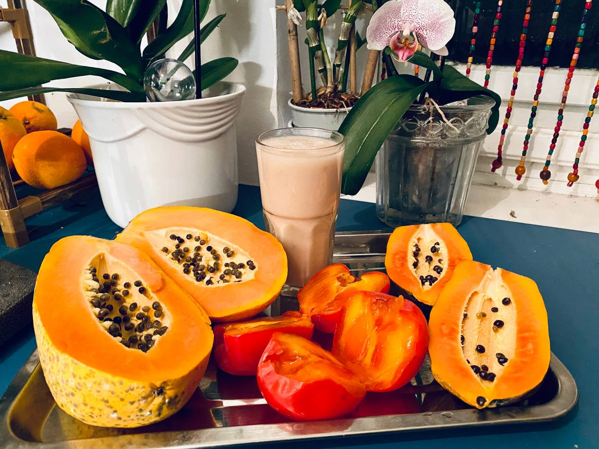
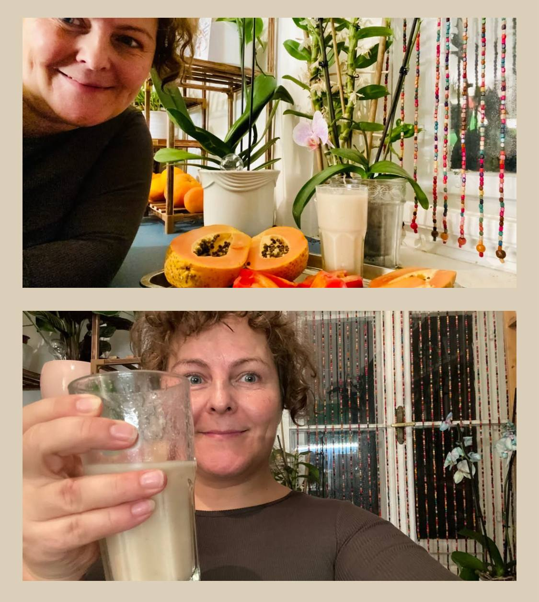
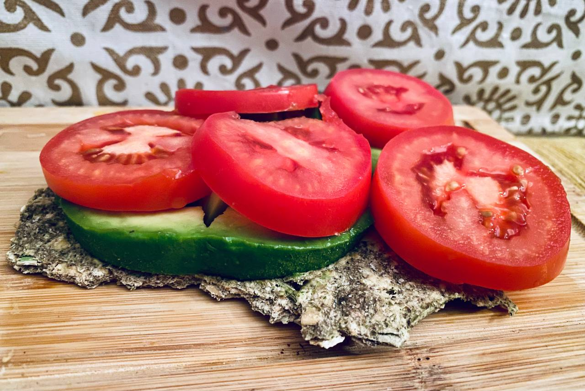
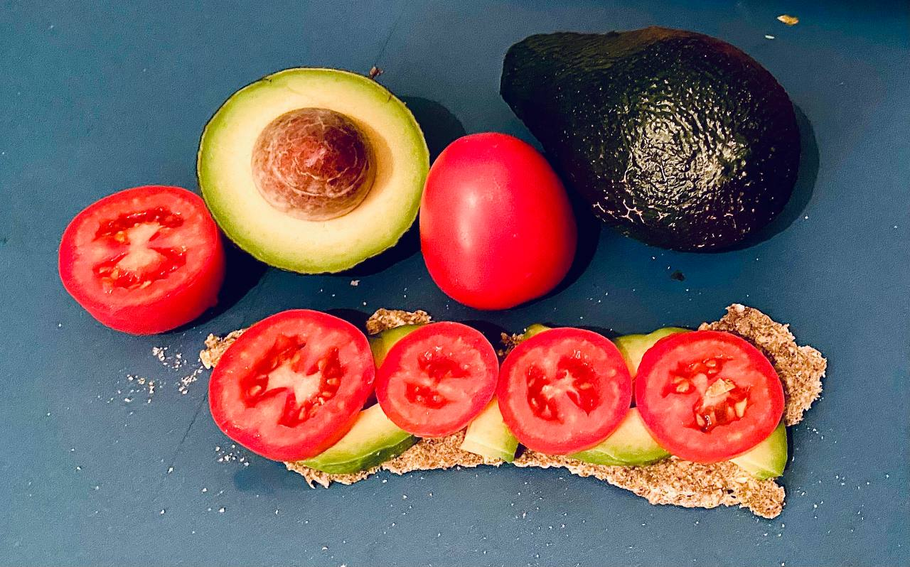
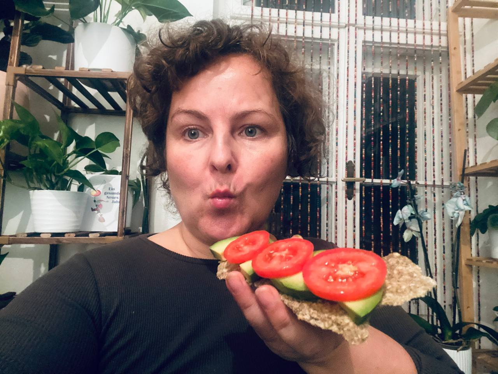

December 24, 2025
Wednesday


Christmas Eve Fruit Platter
🕐 20:00 PMStarting Christmas Eve with a vibrant fruit platter. The perfect way to celebrate the day with energy and lightness. The papaya were so creamy!
Ingredients:
- 2 ripe papayas
- 2 ripe kakhis
- 1 cherimoya smoothie
Preparation of cherimoya smoothie:
I scooped the ripe pulp out of the peel with a spoon, thinned the pulp and seeds with water, then rubbed it through a sieve until the pulp separated from the seeds as much as possible. I then blended the moist pulp until smooth. Enjoy!



Christmas Eve Buckwheat Crackers with Avocado & Tomatoes
🕐 20:00 PMFor the second course, I topped my homemade buckwheat crackers with creamy avocado and tomatoes. It was a wonderful finale to my marvelous raw food Christmas meal.
Ingredients:
- 500 g organic buckwheat
- 250 g chia seeds
- 2 zucchini
- some sprouted oats
- pinch of salt
- olive oil
- osmosis filtered water